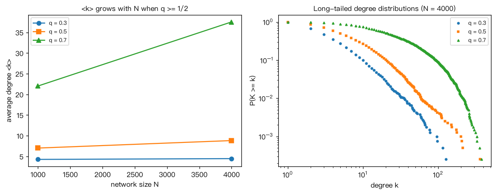

Example08 / 10
复制–分化（duplication–divergence）模型与蛋白质网络的长尾
每一步随机选一个已有“基因” i 复制出 i’：i’ 以概率 q 保留 i 的每条相互作用（分化 = 以 1-q 丢失）， 并以概率 p 与 i 直接相连（同源二聚体）。为避免产生孤立节点，若 i’ 一条边都没保留就重新抽样（与多数文献的做法一致）。 比较 q=0.3、0.5、0.7：平均度随网络规模的变化（均场预期 q>1/2 时持续增长）、最大度与聚集系数， 并用 MLE（k_min=5）给出尾部指数的粗略估计。 输出：q=0.3 时平均度几乎不随 N 变化；q≥0.5 时平均度随 N 增长（q=0.7 时网络迅速变稠密、尾部变平）； 三种 q 下都出现度为数百的枢纽，聚集系数比同规模 ER 网络高一到两个数量级。
Output输出图

Output文字输出
q=0.3: <k>(N=1000)=4.26, <k>(N=4000)=4.45, k_max=127, C=0.104（ER: 0.0016）, 尾部 γ≈2.46 q=0.5: <k>(N=1000)=7.00, <k>(N=4000)=8.82, k_max=363, C=0.129（ER: 0.0022）, 尾部 γ≈2.08 q=0.7: <k>(N=1000)=22.02, <k>(N=4000)=37.52, k_max=376, C=0.101（ER: 0.0093）, 尾部 γ≈1.57
Code代码
# 每一步随机选一个已有“基因” i 复制出 i'：i' 以概率 q 保留 i 的每条相互作用（分化 = 以 1-q 丢失），
# 并以概率 p 与 i 直接相连（同源二聚体）。为避免产生孤立节点，若 i' 一条边都没保留就重新抽样（与多数文献的做法一致）。
# 比较 q=0.3、0.5、0.7：平均度随网络规模的变化（均场预期 q>1/2 时持续增长）、最大度与聚集系数，
# 并用 MLE（k_min=5）给出尾部指数的粗略估计。
# 输出：q=0.3 时平均度几乎不随 N 变化；q≥0.5 时平均度随 N 增长（q=0.7 时网络迅速变稠密、尾部变平）；
# 三种 q 下都出现度为数百的枢纽，聚集系数比同规模 ER 网络高一到两个数量级。
import networkx as nx
import numpy as np
def duplication_divergence(n, q, p, seed=0):
rng = np.random.default_rng(seed)
G = nx.Graph([(0, 1)])
while G.number_of_nodes() < n:
new = G.number_of_nodes()
while True:
i = int(rng.integers(new))
kept = [j for j in G.neighbors(i) if rng.random() < q]
if kept:
break
G.add_edges_from((new, j) for j in kept)
if rng.random() < p:
G.add_edge(new, i)
return G
kbar, degs = {}, {} # 存下结果用于作图
for q in [0.3, 0.5, 0.7]:
out = []
for n in [1000, 4000]:
G = duplication_divergence(n, q, p=0.1, seed=7)
out.append(2 * G.number_of_edges() / n)
k = np.array([d for _, d in G.degree()], float)
kmin = 5
tail = k[k >= kmin]
gam = 1 + len(tail) / np.sum(np.log(tail / (kmin - 0.5))) if len(tail) > 20 else float("nan")
er = nx.gnm_random_graph(G.number_of_nodes(), G.number_of_edges(), seed=1)
print("q=%.1f: <k>(N=1000)=%.2f, <k>(N=4000)=%.2f, k_max=%d, C=%.3f（ER: %.4f）, 尾部 γ≈%.2f"
% (q, out[0], out[1], k.max(), nx.average_clustering(G), nx.average_clustering(er), gam))
kbar[q], degs[q] = out, k
# 作图：左为平均度随规模的变化；右为 N=4000 时的度分布 CCDF
import matplotlib.pyplot as plt
fig, (ax1, ax2) = plt.subplots(1, 2, figsize=(10, 4))
for (q, kb), mk in zip(kbar.items(), ["o", "s", "^"]):
ax1.plot([1000, 4000], kb, mk + "-", label="q = %.1f" % q)
xs = np.sort(np.unique(degs[q]))
ax2.loglog(xs, [(degs[q] >= x).mean() for x in xs], mk, ms=3, label="q = %.1f" % q)
ax1.set_xlabel("network size N"); ax1.set_ylabel("average degree <k>"); ax1.legend(fontsize=8)
ax1.set_title("<k> grows with N when q >= 1/2", fontsize=10)
ax2.set_xlabel("degree k"); ax2.set_ylabel("P(K >= k)"); ax2.legend(fontsize=8)
ax2.set_title("Long-tailed degree distributions (N = 4000)", fontsize=10)
plt.tight_layout(); plt.show()Run在浏览器中运行
首次加载 Python 环境约需 20–40 秒；可以修改参数后重新运行。